Sobrancelhas e cílios
Com Janaina Rocker
Design personalizado e brow lamination, a partir da pergunta que a própria Rocker faz no perfil: o seu design está deixando o olhar pesado?
Cílios também aparecem no perfil. Pergunte pelas opções atuais.
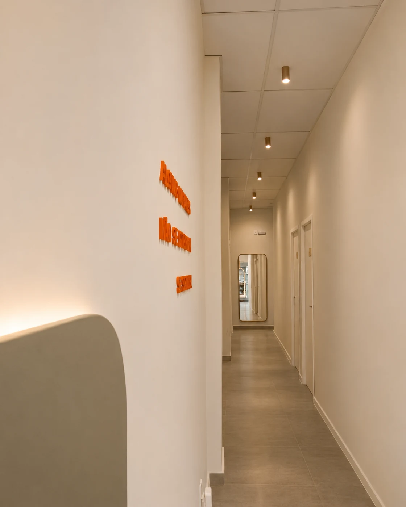
O jeito Rocker de cuidar.
Sobrancelhas, pele e estética avançada com Lilian e Janaina Rocker, em Braço do Norte.
A experiência que você vive aqui também faz parte do procedimento.
O resultado importa, e como você se sente também.
Sobrancelhas, brow lamination e cílios como a Rocker mostra no perfil: de perto e com luz de dia.
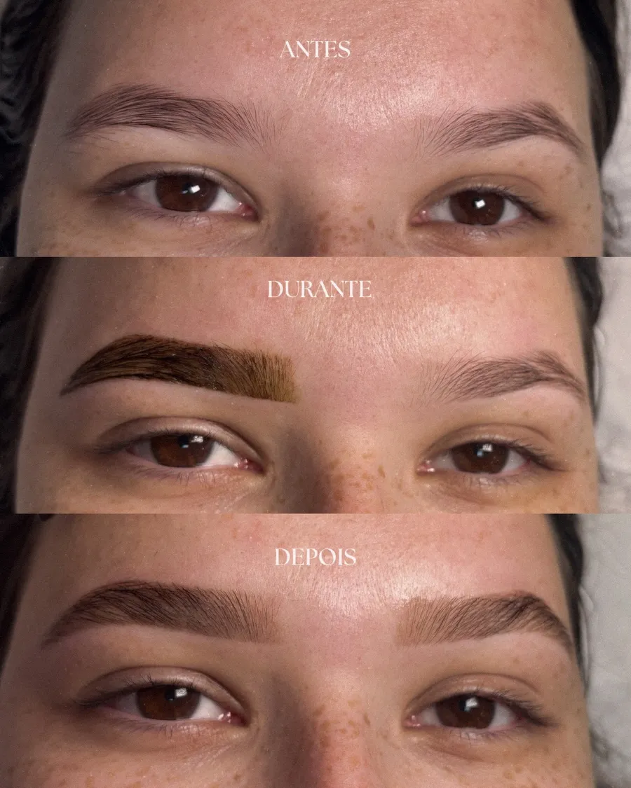
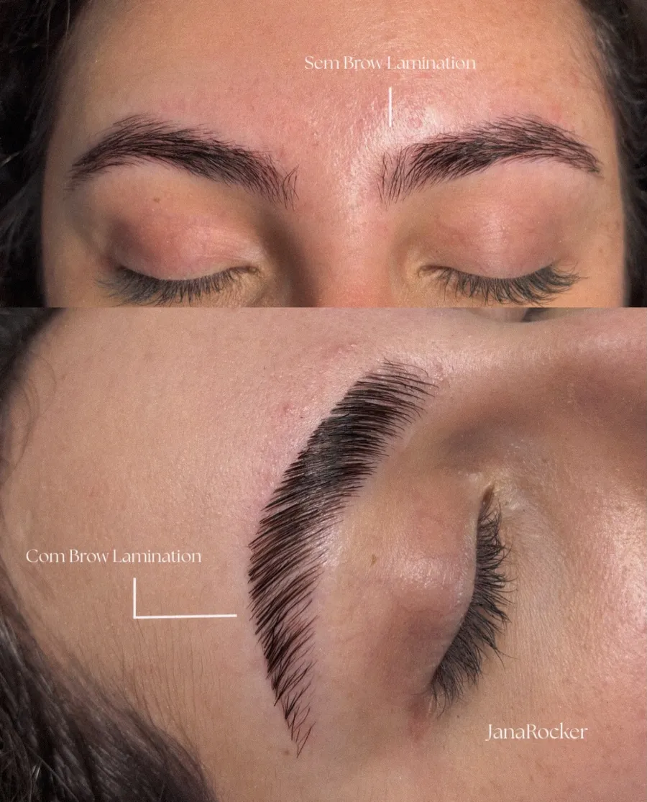
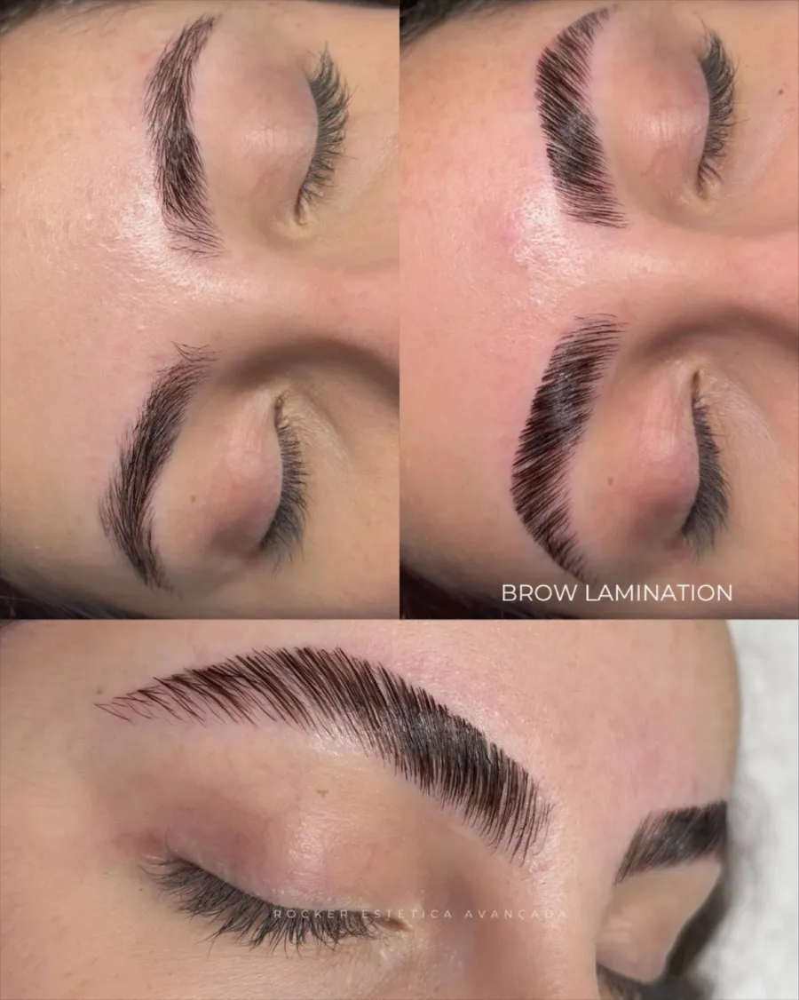
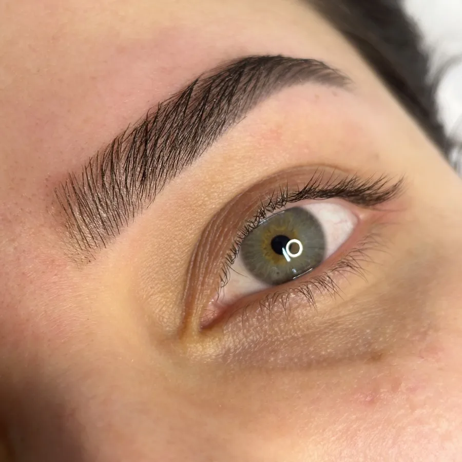
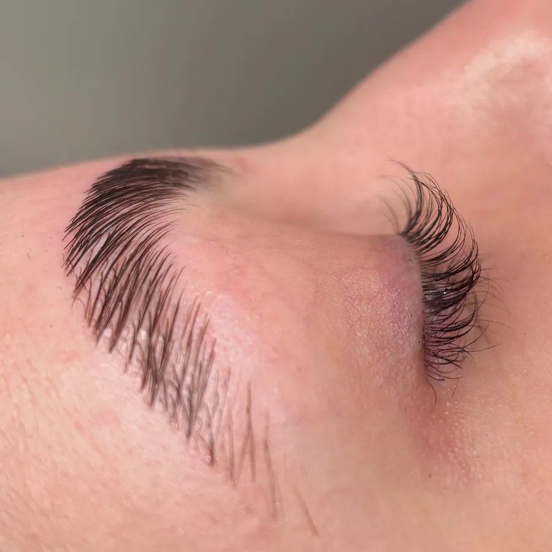
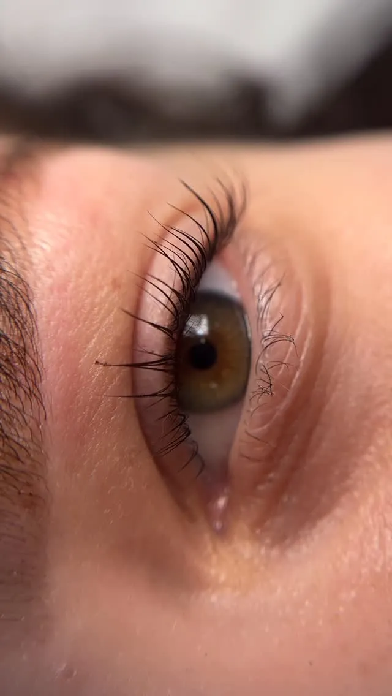
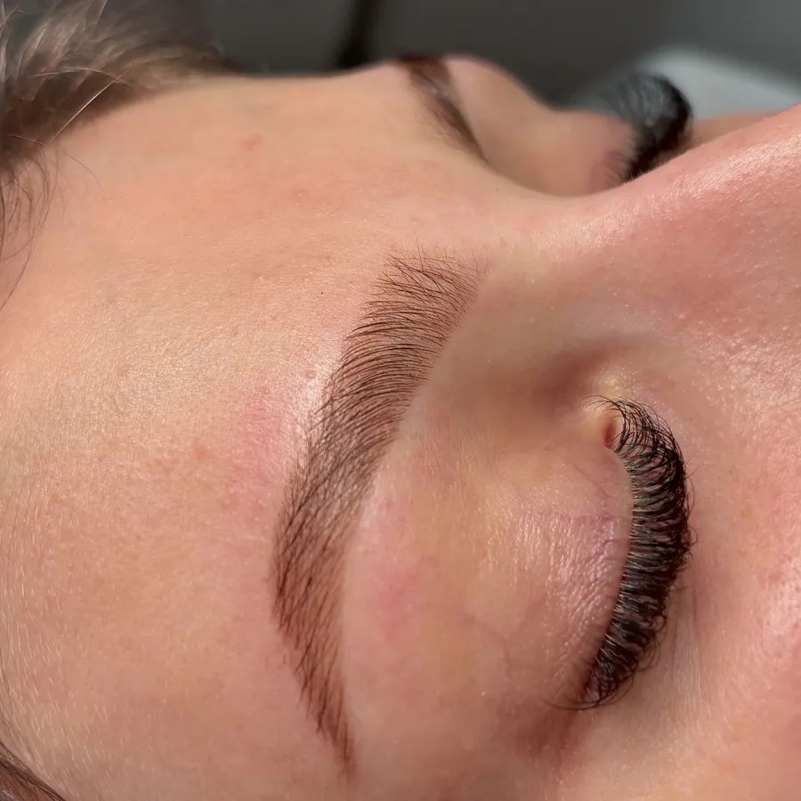
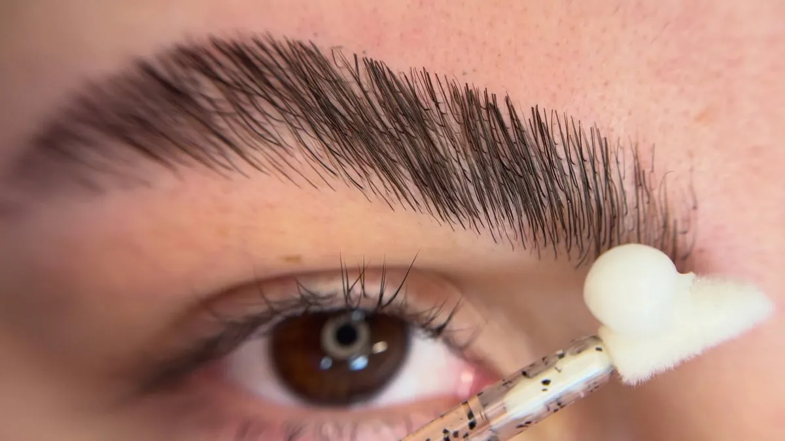
Fotos publicadas pela Rocker no Instagram. Cada resultado depende da pessoa e da avaliação.
Cada tom da cartela é um caminho que a Rocker apresenta no perfil. Toque numa lâmina ou deslize o leque.
Com Janaina Rocker
Design personalizado e brow lamination, a partir da pergunta que a própria Rocker faz no perfil: o seu design está deixando o olhar pesado?
Cílios também aparecem no perfil. Pergunte pelas opções atuais.
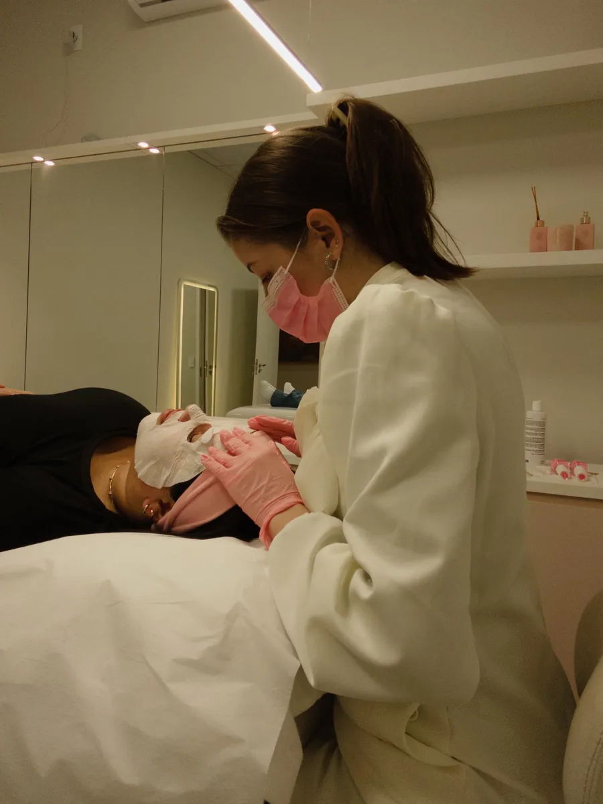
Com Janaina Rocker
Limpeza de pele personalizada, apresentada pela Janaina entre os seus atendimentos de estética facial.
Com Lilian Rocker
Dois atendimentos que a Lilian apresenta entre os seus. Se fazem sentido para você é uma conversa para ter com ela, com calma.
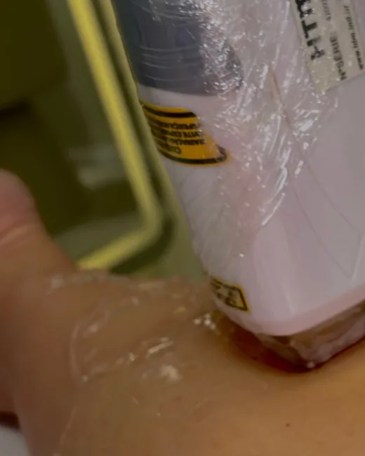
Equipe Rocker
A Rocker já divulgou depilação a laser no perfil. Pergunte pela agenda e pelas condições de agora.
Divulgação anterior; disponibilidade a confirmar.
Em parceria
Atendimento de nutrição anunciado pela Rocker em parceria com a @nutridudamedeiros.
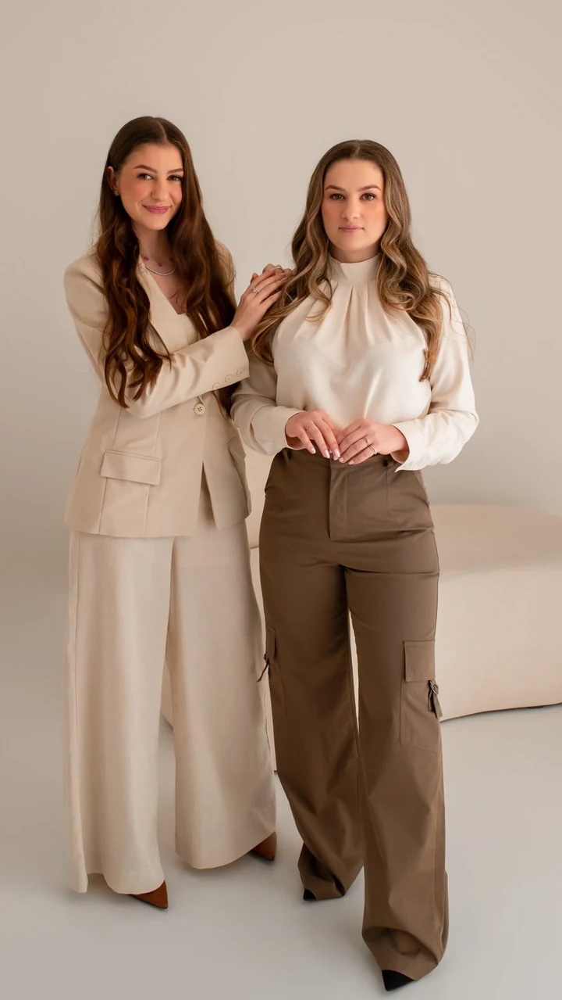
Formada em Farmácia pela UNIBAVE, com pós-graduação em Estética. Atende toxina botulínica e secagem de microvasos.
@lilianrockerFormada em Estética e Cosmética pela UNESC. Cuida do design de sobrancelhas e da estética facial, com limpeza de pele personalizada.
@janarockerrFormações conforme as apresentações publicadas pela própria Rocker.
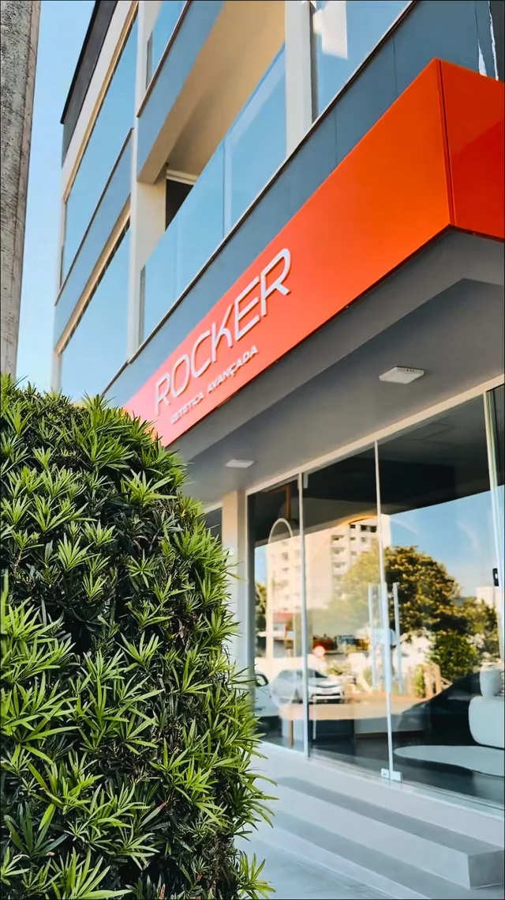